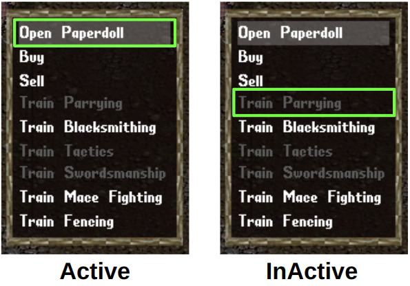
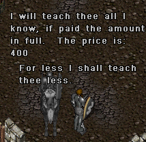

States/Actions
Basic States
This data type is usually used to store the item of backpack, equipped by player, corpse of monster. Note that, this is the simpler than GrpcGameObjectData data type.


This includes the every object of game such as item, mobile, tree, rock, etc. This information can be used to find the obstacls that can block the movement of player on the screen.

This is simplied version of the GrpcGameObjectData that is made to reduce the size of data. For specific, it can be used to save the land object around the player to drop the item.
This data type only stors the position of game object as list type. It is mainly used to store the Stactic object such as tree and rock that is not really important for player's decision.



Mixed States
There are multiple part in players(Cloak, Shirt, Pants, Shoes, Legs, Arms, Torso, Tunic, Ring, Bracelet, Face, Gloves, Skirt, Robe, Waist, Necklace, Hair, Beard, Earrings, Helmet, OneHanded, TwoHanded, Talisman) where item can be equipped. This data type stores all equipped item at now.

Actions
Python
Description
These classes manage the semaphores in the shared memory. Godot classes assume that the semaphores are already
created. Meanwhile python classes create them on initialization.
Deployment
Description
These classes manage torch jit model loading and executing in Godot engine.